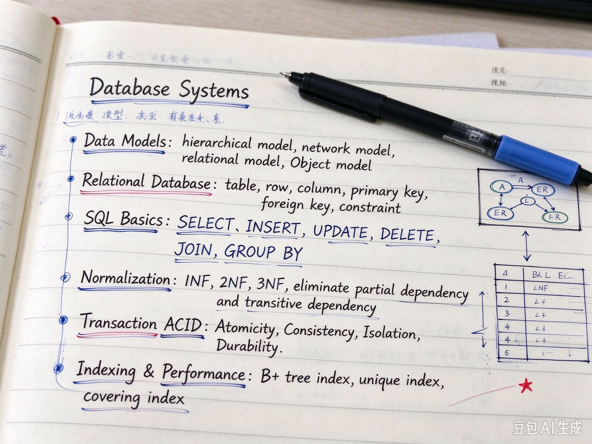

Student name: Mohamed Marwan
Class: DSAI 3B
Subject: Databases
Lecturer: Dr Brumancia
Databases
1. Database normalization is the process of organizing the columns (attributes) and tables (relations) of a relational database to minimize data redundancy and improve data integrity. 2. Normalization typically involves dividing larger tables into smaller, more structured tables and defining relationships between them. 3. The most common normalization forms are 1NF, 2NF, and 3NF, which deal with data redundancy and dependency issues. 4. Higher forms like Boyce-Codd Normal Form (BCNF) and 4NF address more complex dependencies.
Current Focus
1. AI ethics is a branch of applied ethics that studies the moral issues and concerns related to artificial intelligence. 2. It addresses questions about the impact of AI on society, including issues of fairness, accountability, transparency, and privacy. 3. Key concerns include algorithmic bias, job displacement, autonomous weapons, and the potential for AI to be used for malicious purposes. 4. Ethical guidelines and regulations are being developed to ensure that AI is developed and used in a responsible manner.